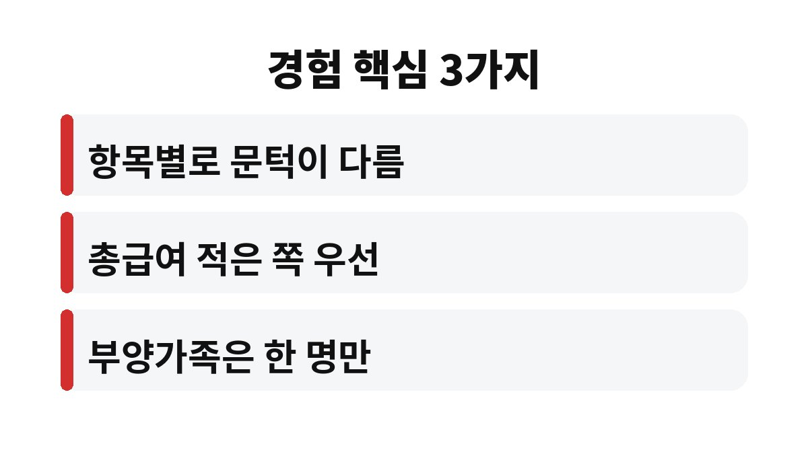
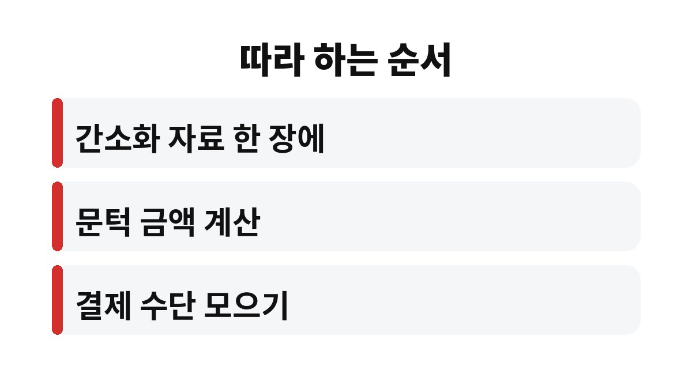

이 글은 맞벌이 연말정산 몰아주기를 어떻게 해야 할지 몰라 공제를 부부가 반반 나눠 신청하던 분들을 위해 쓴 글입니다.
공제 항목마다 문턱과 세율이 달라서 항목별로 유리한 쪽에 모으는 것이 기본 원칙이라는 점을 2026년 기준으로 정리했습니다.
맞벌이 부부는 같은 돈을 쓰고도 누구 몫으로 공제받느냐에 따라 결과가 달라집니다.
저도 처음에는 공평하게 나누는 것이 맞다고 생각해서 지출도 반반으로 나누어 쓰려 했습니다.
한 사람이 문턱을 넘기지 못한 채 쓴 카드값은 공제를 한 푼도 받지 못하고 사라집니다.
반대로 문턱을 넘긴 쪽에서 쓰면 넘긴 부분부터 공제 대상이 됩니다.
그래서 지출을 나누기 전에 누가 먼저 문턱을 넘길지부터 계산해야 한다고 판단했습니다.
신용카드 소득공제는 총급여의 25%를 넘게 쓴 금액부터, 의료비 세액공제는 총급여의 3%를 넘게 쓴 금액부터 공제가 시작됩니다.
문턱이 총급여에 비례하므로 대체로 총급여가 적은 쪽에 모을수록 문턱을 빨리 넘기게 됩니다.
한 사람의 총급여가 다른 사람의 두 배라면 문턱 금액도 두 배가 되어 같은 지출이어도 공제 효과가 크게 달라집니다.
이 사실을 알고 나서야 반반이라는 기준이 맞지 않는다는 점을 받아들였습니다.
홈택스 연말정산 간소화 서비스에서 부부 각자의 자료를 내려받아 항목별로 한 장에 정리했습니다.
카드 사용액과 의료비, 교육비, 기부금을 누가 얼마 썼는지 적어 보니 한쪽에 몰리지 않고 흩어져 있었습니다.
그 표를 보고 나서야 어느 쪽 카드를 더 써야 하는지 눈으로 확인할 수 있었습니다.
감으로 정하던 때보다 훨씬 마음이 편해졌습니다.

자녀와 부모님 같은 부양가족의 기본공제는 부부 중 한 사람만 받을 수 있어 중복 신청이 되지 않습니다.
소득이 많아 세율이 높은 쪽에 올리는 편이 유리한 경우가 많다고 알고 있어서 부부 소득 구간을 먼저 비교했습니다.
부양가족 이름이 부부 양쪽 자료에 겹쳐 올라오지 않는지 확인하는 일은 놓치기 쉬워서 따로 메모해 두었습니다.
문턱을 넘지 못해 공제를 전혀 받지 못하는 지출이 줄었다는 점은 확실히 체감했습니다.
정확한 환급액은 부부 소득에 따라 달라 제 경우를 기준으로 삼을 수는 없습니다.
지난해에는 카드를 쓸 때마다 어느 쪽이 유리할지 고민했지만 이번에는 결제 수단을 미리 정해 두었습니다.
병원비가 큰 달에는 한쪽 카드로 모아 결제하는 방식으로 바꿨습니다.
| 항목 | 공제가 시작되는 문턱 | 모으는 방향 |
|---|---|---|
| 신용카드 소득공제 | 총급여의 25% 초과분 | 총급여 적은 쪽 우선 검토 |
| 의료비 세액공제 | 총급여의 3% 초과분 | 총급여 적은 쪽 우선 검토 |
| 부양가족 기본공제 | 부부 중 한 사람만 신청 | 세율 높은 쪽 검토 |
| 교육비·기부금 | 공제 대상 요건 확인 | 요건에 맞는 쪽 확인 |
위 표는 일반적인 방향이며 부부의 소득 구간에 따라 결과가 달라질 수 있습니다.

1. 간소화 자료에서 부부 각자의 항목별 지출을 한 장에 모읍니다.
2. 두 사람의 총급여를 적고 카드 25%, 의료비 3% 문턱 금액을 각각 계산합니다.
3. 카드와 의료비는 문턱을 먼저 넘길 수 있는 쪽으로 남은 기간 결제 수단을 모읍니다.
4. 부양가족은 한쪽에만 신청되도록 정하고 이름과 순서를 메모해 둡니다.
5. 연말 전에 한 번 더 점검하고 12월 말까지 결제 방향을 조정합니다.
반반 나누는 것이 공평해 보여도 연말정산에서는 모으는 쪽이 유리한 항목이 따로 있었습니다.
부부 소득과 지출이 집마다 다르므로 계산이 애매하면 홈택스 모의계산이나 세무 전문가에게 확인하시기 바랍니다.
올해 남은 기간 결제 수단부터 정해 두시길 바랍니다.
작은 차이처럼 보여도 매년 반복되는 일이라 한 번 기준을 세워 두면 다음 해에도 같은 방식으로 이어 가기 쉽습니다.
※ 본 글은 2026년 기준 개인 경험을 바탕으로 한 정보이며, 세금·금융 상품 선택은 본인 상황에 맞게 전문가와 확인하시길 바랍니다.